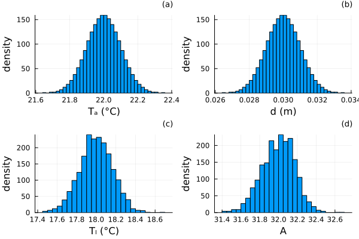
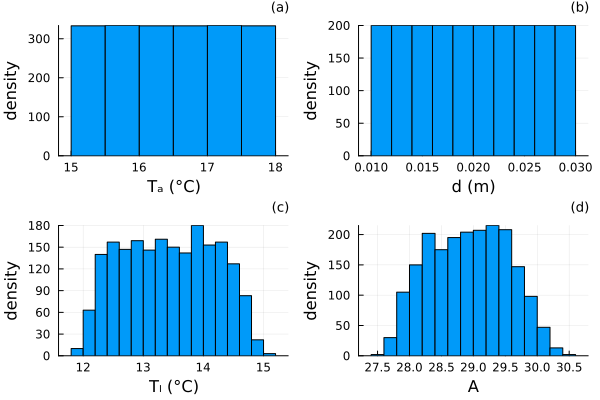
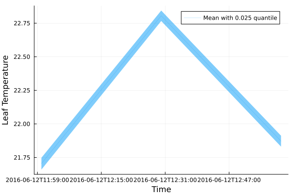

Uncertainty propagation
Introduction
We can very easily propagate uncertainties in all computations in PlantBiophysics using either Measurements.jl or MonteCarloMeasurements.jl. So instead of using classic data types such as Float64 for parameter values, micro-meteorological conditions or initial values, we use a specific data type that propagates distributions rather than scalars.
Measurements.jl provides a very fast way to propagate errors, but is only suited for linear processes. MonteCarloMeasurements.jl in the other hand is slower but provides a better estimation of the propagation for non-linear processes. The main idea of Monte Carlo methods is to simulate the problem for a large number of times, randomly drawing inputs in the distributions specified by the user. We then get distributions as outputs (and means/standard deviations).
Example: normal distributions
Let's first import all packages we need:
using PlantBiophysics, PlantSimEngine, PlantMeteo, MonteCarloMeasurements, Plots, Dates
# Toggle the use of a comparison function (using `mean`):
unsafe_comparisons(true)We can use the μ ± σ notation for the values of the parameters and micro-meteorological conditions to create a Gaussian distribution (of mean μ and standard deviation σ):
meteo = Atmosphere(T = 22.0 ± 0.1, Wind = 0.8333 ± 0.1, P = 101.325 ± 1., Rh = 0.4490995 ± 0.02, Cₐ = 400. ± 1.)
leaf = ModelList(
Monteith(),
Fvcb(),
Medlyn(0.03, 12.0),
status = (Rₛ = 13.747 ± 1., sky_fraction = 1.0, PPFD = 1500.0 ± 1., d = 0.03 ± 0.001),
type_promotion = Dict(Float64 => Particles{Float64,2000})
)Now our parameters and conditions are not scalars, but Particles, which are n sampled values in the μ ± σ distributions. By default n = 2000.
We can now run our simulation:
run!(leaf,meteo)And now we can plot the resulting inputs/outputs values:
p1 = plot(meteo.T,legend=:false,xlabel="Tₐ (°C)",ylabel="density",dpi=300,title="(a)",titlefontsize=9)
p2 = plot(leaf.status.d[1],legend=:false,xlabel="d (m)",ylabel="density",dpi=300,title="(b)",titlefontsize=9)
p3 = plot(leaf.status.Tₗ[1],legend=:false,xlabel="Tₗ (°C)",ylabel="density",dpi=300,title="(c)",titlefontsize=9)
p4 = plot(leaf.status.A[1],legend=:false,xlabel="A",ylabel="density",dpi=300,title="(d)",titlefontsize=9)
plot(p1,p2,p3,p4,dpi=300,titleloc=:right)
Example: other distributions
It is also possible to use other types of distributions. For example the a .. b notation will set a uniform distribution in the interval [a,b]). For others distributions, you can use the package Distributions.jl to use any other distributions (Binomial, Gamma, etc...) as a ⊠ Gamma(1) (i.e. a plus a Gamma distribution of parameter 1) or a ⊠ Exponential(1) (i.e. an exponential distribution of parameter 1 with a as factor).
Here's an example usage:
# ⊞ \boxplus
# ⊠ \boxtimes
meteo = Atmosphere(T = 15.0 .. 18.0, Wind = 0.8333 ± 0.1, P = 101.325 ± 1., Rh = 0.4490995 ± 0.02, Cₐ = 400. ± 1.)
leaf = ModelList(
Monteith(),
Fvcb(),
Medlyn(0.03, 12.0),
status = (Rₛ = 13.747 ± 1., sky_fraction = 1.0, PPFD = 1500.0 ± 1., d = 0.01 .. 0.03),
type_promotion = Dict(Float64 => Particles{Float64,2000})
)
run!(leaf,meteo)
p1 = plot(meteo.T,legend=:false,xlabel="Tₐ (°C)",ylabel="density",dpi=300,title="(a)",titlefontsize=9)
p2 = plot(leaf.status.d[1],legend=:false,xlabel="d (m)",ylabel="density",dpi=300,title="(b)",titlefontsize=9)
p3 = plot(leaf.status.Tₗ[1],legend=:false,xlabel="Tₗ (°C)",ylabel="density",dpi=300,title="(c)",titlefontsize=9)
p4 = plot(leaf.status.A[1],legend=:false,xlabel="A",ylabel="density",dpi=300,title="(d)",titlefontsize=9)
plot(p1,p2,p3,p4,dpi=300,titleloc=:right)
Plotting
Plotting values of type MonteCarloMeasurements.jl is allowed using plot as it were scalars. It will plot confidence interval too. You can also check specific MonteCarloMeasurements.jl function ribbonplot (more details in part Plotting of the package documentation).
For example we can simulate a leaf energy balance over consecutive time-steps:
weather = read_weather(
joinpath(dirname(dirname(pathof(PlantMeteo))), "test", "data", "meteo.csv"),
:temperature => :T,
:relativeHumidity => (x -> x ./ 100) => :Rh,
:wind => :Wind,
:atmosphereCO2_ppm => :Cₐ,
date_format = DateFormat("yyyy/mm/dd")
)
leaf = ModelList(
Monteith(),
Fvcb(),
Medlyn(0.03, 12.0),
status = (Rₛ = 13.747 ± 2., sky_fraction = 0.6..1.0, PPFD = 1500.0 ± 100., d = [0.03,0.03,0.03]),
type_promotion = Dict(Float64 => Particles{Float64,2000})
)
run!(leaf, weather)
ribbonplot(weather[:date], leaf[:Tₗ], alpha = 0.2, ylab = "Leaf Temperature", xlab = "Time")
Performance
Monte Carlo results are highly dependent on the number of simulations given by the number of particles n. But keep in mind that the result of an uncertainty propagation with a low n is more unreliable than with a higher n.